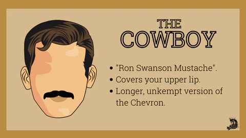

Movember is coming and its going to be a really chilly one this time around. On top of your jacket, your scarf, your hat, and your boots, why not use nature's winter gear? The mighty stache. Here are three styles guaranteed to keep you warm this winter. Ready to face Movember? Don these staches for a warm and cozy winter.
1. The Cowboy Stache
The Cowboy is the mustache style worn by Ron Swanson of Parks and Recreation. It's a longer, unkempt version of the Chevron. Instead of trimming your mustache to the top of your lips, allow it to grow until it touches your bottom lip. You won't have to worry about keeping this style too neat but trim it up once in a while so you don't look lazy.
2. The Handlebar
The Handlebar is a retro favorite and can be argued as one of the best mustache styles. To grow out the handlebar mustache style, let your mustache grow until it's over your upper lip. Then using mustache wax and a comb, part your hair over the middle of your lip. Spread the wax over your whole mustache (use the comb and a blow-dryer), then twist the ends up into a curl. For a tighter curl, use the end of a mustache comb and a pencil or pen. Check out more on our tips on how to style a Handlebar mustache. In the end, keep your handlebar mustache curled, twisted, and waxed.
3. The Walrus
If you want to channel the spirit of Teddy Roosevelt, then you want a Walrus mustache. The Walrus mustache style is iconic due to it's bushy, overhanging and long appearance. To master this look, you need the length of a Cowboy mustache and the styling of the relaxed Handlebar. Grow your mustache until it hangs over the edge of your lower lip. Keep the center of your facial hair trimmed, like scissors in a horseshoe shape. Then using wax, a comb, and a blow dryer, wrangle your facial hair into two equal parts. You can use the wax to turn the ends of your beard comb and your mustache up or let it hang.